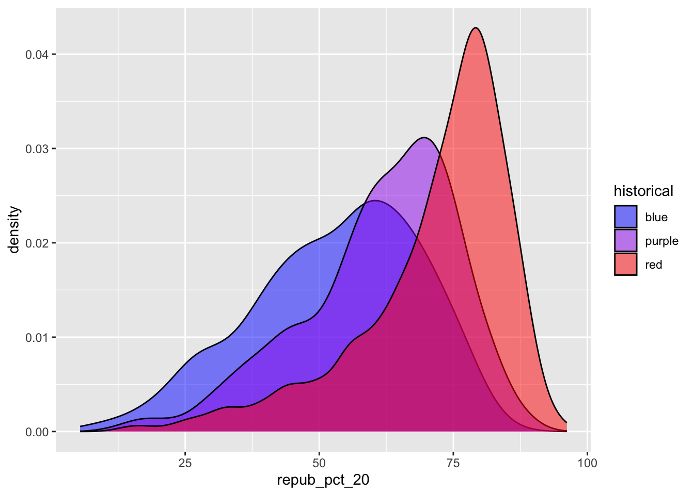
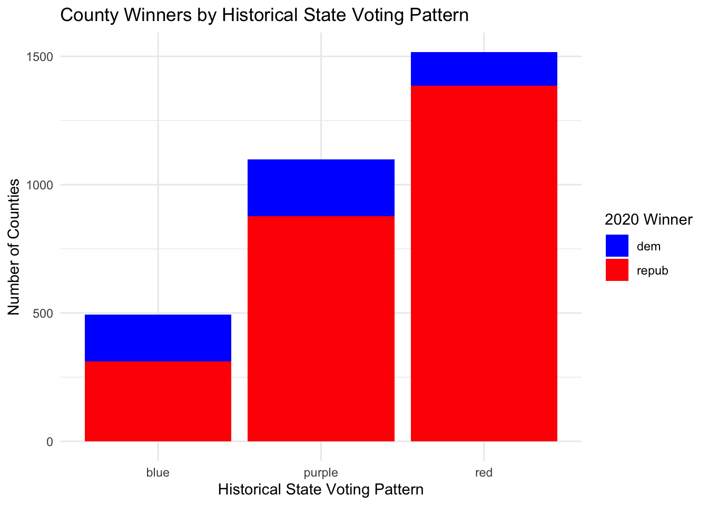

Explore how to build and interpret visualizations of bivariate, i.e. two variable, relationships.
8.2 Additional Resources
For more information about the topics covered in this chapter, refer to the resources below:
ggplot demo (YouTube) by Lisa Lendway
common ggplot mistakes (YouTube) by Lisa Lendway
Visualizing amounts (html) by Wilke
Visualizing many distributions at once (html) by Wilke
8.3 4.1 Review
Let’s review some univariate concepts and code using our class survey data. If the answers aren’t at the top of your mind, don’t fret! We’ve barely started speaking this new language, and learned a ton of vocab last week, so you naturally won’t remember it all.
# Import datasurvey <-read.csv("https://hash-mac.github.io/stat112site-s25/data/survey.csv")# How many students have now filled out the survey?nrow(survey)
[1] 49
# What type of variables do we have?str(survey)
'data.frame': 49 obs. of 4 variables:
$ cafe_mac : chr "mashed potatoes" "is tasty" "burger" "caesar salad" ...
$ minutes_to_campus: int 5 5 5 12 0 10 5 0 0 5 ...
$ fav_temp_c : num 26 28 19 18 24 -10 21 25 18 25 ...
$ hangout : chr "the mountains" "a city" "a forest" "a forest" ...
8.3.1 Example 1: Hangout Preferences
Students were asked, in that moment, where they’d most like to spend time outside. How did they answer? Was there a lot of agreement or a lot of variability in answers? Build and interpret a plot that helps address these questions while reviewing:
“code as communication”
connecting with the components of a plot:
set up a frame
add a layer / geometric element
change the theme, e.g. axis labels, color, fill
# Attach a package needed to use the ggplot functionlibrary(tidyverse)
── Attaching core tidyverse packages ──────────────────────── tidyverse 2.0.0 ──
✔ dplyr 1.1.4 ✔ readr 2.1.5
✔ forcats 1.0.0 ✔ stringr 1.5.1
✔ ggplot2 3.5.1 ✔ tibble 3.2.1
✔ lubridate 1.9.4 ✔ tidyr 1.3.1
✔ purrr 1.0.4
── Conflicts ────────────────────────────────────────── tidyverse_conflicts() ──
✖ dplyr::filter() masks stats::filter()
✖ dplyr::lag() masks stats::lag()
ℹ Use the conflicted package (<http://conflicted.r-lib.org/>) to force all conflicts to become errors
# Make a ggplot of hangout preferencesggplot(survey, aes(x = hangout)) +geom_bar() +labs(title ="Student Hangout Preferences", x ="Preferred Hangout Location", y ="Count") +theme_minimal()
8.3.2 Example 2: Temperature Preferences
Students were asked about their ideal outdoor temperature, in degrees Celsius. How did they answer? What was the typical response? What was the range in responses? Were there any outliers? Build and interpret 2 plots that help address these questions.
# Histogram of temperature preferencesggplot(survey, aes(x = fav_temp_c)) +geom_histogram(binwidth =5, fill ="skyblue", color ="white") +labs(title ="Student Temperature Preferences",x ="Preferred Temperature (°C)",y ="Count") +theme_minimal()
# Density plot of temperature preferencesggplot(survey, aes(x = fav_temp_c)) +geom_density(fill ="skyblue", alpha =0.5) +labs(title ="Density of Student Temperature Preferences",x ="Preferred Temperature (°C)",y ="Density") +theme_minimal()
8.3.3 Bar Charts vs. Histograms
Bar charts & histograms can appear pretty similar, but they do different things.
Bar charts count up the number of observations of each outcome of a variable. They’re good for categorical variables, or quantitative variables with only a handful of possible outcomes.
Histograms count up the number of observations that fall into different numerical ranges of variable. They’re good for quantitative variables, especially those with many different observed outcomes.
8.4 4.2 New stuff
Thus far, we’ve been studying one variable at a time, using univariate plots. But once we get a sense of how individual variables behave on their own, our questions often turn to relationships among variables. For example, in our hikes data:
How much time does it take to complete a hike? ——> How is time related to a hike’s elevation? What about its length?
How does difficult rating vary from hike to hike? ——-> How is difficulty rating related to a hike’s ascent?
8.4.1 4.2.1 Exploring relationships
Exploring univariate patterns often sparks follow-up questions about relationships between 2+ variables. Often, but not always, variables take on specific roles:
response variable: the variable whose variability we would like to explain (time to complete a hike)
predictors: variables that might explain some of the variability in the response (a hike’s elevation or length)
Visualizations can help explore:
relationship trends (direction and form)
relationship strength (degree of variability from the trend)
outliers in the relationship
8.4.1.1 Example 3
For each pair of variables below, sketch on paper a visualization of their relationship. Focus on general viz process, don’t worry about the exact details. The data here are totally made up.
3pm temperature (response) vs 9am temperature (predictor)
rain_today location
1 no A
2 no A
3 no A
4 no A
5 yes A
6 no A
7 yes A
8 no B
9 yes B
10 yes B
11 no B
12 yes B
Think: How might we modify the below bar plot of location to distinguish between days on which it did or didn’t rain?
ggplot(weather, aes(x = location)) +geom_bar()
8.4.2 4.2.2 General guidance for building bivariate plots
As with univariate plots, an appropriate visualization for the relationship between 2 variables depends upon whether the variables are quantitative or categorical. In general:
Each quantitative variable requires a new axis (or a quantitative scale if we run out of axes).
Each categorical variable requires a new way to “group” the graphic (eg: using colors, shapes, separate facets, etc)
For visualizations in which overlap in glyphs or plots obscures the patterns, try faceting or transparency.
8.5 4.3 Exercises
Github user Tony McGovern has compiled and made available 2020/2016/2012 presidential election results for most of 3000+ U.S. counties, except Alaska.
A wrangled version of this data, is imported below, after being combined with:
2013 county-level demographics from the df_county_demographics data set from the choroplethr R package
historical voting trends in the state in which the county falls (from https://www.270towin.com/content/blue-and-red-states):
red = consistently Republican
blue = consistently Democratic
purple = something in between
# Load dataelections <-read.csv("https://mac-stat.github.io/data/election_2020_county.csv")# Check it outhead(elections)
state_name state_abbr historical county_name county_fips total_votes_20
1 Alabama AL red Autauga County 1001 27770
2 Alabama AL red Baldwin County 1003 109679
3 Alabama AL red Barbour County 1005 10518
4 Alabama AL red Bibb County 1007 9595
5 Alabama AL red Blount County 1009 27588
6 Alabama AL red Bullock County 1011 4613
repub_pct_20 dem_pct_20 winner_20 total_votes_16 repub_pct_16 dem_pct_16
1 71.44 27.02 repub 24661 73.44 23.96
2 76.17 22.41 repub 94090 77.35 19.57
3 53.45 45.79 repub 10390 52.27 46.66
4 78.43 20.70 repub 8748 76.97 21.42
5 89.57 9.57 repub 25384 89.85 8.47
6 24.84 74.70 dem 4701 24.23 75.09
winner_16 total_votes_12 repub_pct_12 dem_pct_12 winner_12 total_population
1 repub 23909 72.63 26.58 repub 54907
2 repub 84988 77.39 21.57 repub 187114
3 repub 11459 48.34 51.25 dem 27321
4 repub 8391 73.07 26.22 repub 22754
5 repub 23980 86.49 12.35 repub 57623
6 dem 5318 23.51 76.31 dem 10746
percent_white percent_black percent_asian percent_hispanic per_capita_income
1 76 18 1 2 24571
2 83 9 1 4 26766
3 46 46 0 5 16829
4 75 22 0 2 17427
5 88 1 0 8 20730
6 22 71 0 6 18628
median_rent median_age
1 668 37.5
2 693 41.5
3 382 38.3
4 351 39.4
5 403 39.6
6 276 39.6
We’ll use this data to explore voting outcomes within the U.S.’s 2-party system. Here’s a list of candidates by year:
year
Republican candidate
Democratic candidate
2020
Donald Trump
Joe Biden
2016
Donald Trump
Hillary Clinton
2012
Mitt Romney
Barack Obama
8.5.1 Exercise 0: Review
8.5.1.1 Part a
How many, or roughly what percent, of the 3000+ counties did the Republican candidate win in 2020?
Take a guess.
Then make a plot of the winner variable.
Then discuss what follow-up questions you might have (and that our data might help us answer).
# Make a bar plot of the winner variableggplot(elections, aes(x = winner_20)) +geom_bar(fill ="steelblue") +labs(title ="2020 Election Winners by County",x ="Winner",y ="Number of Counties") +theme_minimal()
Answer: Based on the plot, it appears that the Republican candidate won in approximately 2,500 counties, which is roughly 80-85% of the total counties.
Follow-up questions might include: - How does this compare to the number of counties won in previous elections (2016, 2012)? - Are there regional patterns in which counties vote Republican vs Democratic? - Do demographic factors like population density, income, education, etc. correlate with voting patterns? - How does the number of counties won relate to the popular vote and electoral college results?
8.5.1.2 Part b
The repub_pct_20 variable provides more detail about the Republican support in each county. Construct a plot of repub_pct_20.
# Histogram of Republican support in 2020ggplot(elections, aes(x = repub_pct_20)) +geom_histogram(binwidth =5, fill ="red", color ="white") +labs(title ="Distribution of Republican Support in 2020 by County",x ="Republican Percentage (2020)",y ="Number of Counties") +theme_minimal()
# Density plot of Republican support in 2020ggplot(elections, aes(x = repub_pct_20)) +geom_density(fill ="red", alpha =0.5) +labs(title ="Density of Republican Support in 2020 by County",x ="Republican Percentage (2020)",y ="Density") +theme_minimal()
Notice that the distribution of Republican support from county to county is slightly left skewed or negatively skewed.
Follow-up questions: - Why is the distribution of Republican support left-skewed? - How does population density relate to the Republican vote share? - Are there regional patterns in Republican support? - How has Republican support in counties changed from 2016 to 2020?
8.5.2 Exercise 1: Quantitative vs Quantitative Intuition Check
Below is a scatterplot of the Republican support in 2020 vs 2016. Notice that:
both variables are quantitative, and get their own axes
the response variable is on the y-axis, demonstrating how repub_pct_20 might be predicted by repub_pct_16, not vice versa
Try to replicate this using ggplot(). THINK:
What info do you need to set up the canvas?
What geometric layer (geom_???) might add these dots / points for each county? We haven’t learned this yet, just take some guesses.
# Create a scatterplot of Republican support in 2020 vs 2016ggplot(elections, aes(x = repub_pct_16, y = repub_pct_20)) +geom_point() +labs(title ="Republican Support in 2020 vs 2016 by County",x ="Republican Percentage (2016)",y ="Republican Percentage (2020)") +theme_minimal()
8.5.3 Exercise 2: 2 Quantitiative Variables
Run each chunk below to build up a a scatterplot of repub_pct_20 vs repub_pct_16 with different glyphs representing each county. Address or think about any prompts in the comments (#).
# Set up the plotting frame# How does this differ than the frame for our histogram of repub_pct_20 alone?# ANSWER: We now have two variables mapped to x and y axes, instead of just one variable on the x-axisggplot(elections, aes(y = repub_pct_20, x = repub_pct_16))
# Add a layer of points for each county# Take note of the geom!ggplot(elections, aes(y = repub_pct_20, x = repub_pct_16)) +geom_point()
# Change the shape of the points# What happens if you change the shape to another number?ggplot(elections, aes(y = repub_pct_20, x = repub_pct_16)) +geom_point(shape =3)
# Modify the code to make the points "orange"ggplot(elections, aes(y = repub_pct_20, x = repub_pct_16)) +geom_point(color ="orange")
# Add a layer that represents each county by the state it's in# Take note of the geom and the info it needs to run!ggplot(elections, aes(y = repub_pct_20, x = repub_pct_16)) +geom_text(aes(label = state_abbr))
8.5.4 Exercise 3: Reflect
Summarize the relationship between the Republican support in 2020 and 2016. Be sure to comment on:
the strength of the relationship (weak/moderate/strong)
the direction of the relationship (positive/negative)
outliers (in what state do counties deviate from the national trend? Any ideas why this might be the case?)
Answer: The relationship between Republican support in 2020 and 2016 is very strong and positive - counties that had high Republican support in 2016 generally also had high Republican support in 2020. The points closely follow a linear pattern with most points falling near the diagonal line.
Looking at the text plot, there appear to be some outliers in states like Utah (UT) where Republican support decreased from 2016 to 2020, and in Texas (TX) where Republican support increased in some counties. These deviations might be due to factors like changing demographics, candidate-specific factors, or local political developments between the two elections.
8.5.5 Exercise 4: Visualizing trend
The trend of the relationship between repub_pct_20 and repub_pct_16 is clearly positive and (mostly) linear. We can highlight this trend by adding a model “smooth” to the plot:
ggplot(elections, aes(y = repub_pct_20, x = repub_pct_16)) +geom_point() +geom_smooth()
`geom_smooth()` using method = 'gam' and formula = 'y ~ s(x, bs = "cs")'
8.5.5.1 Part a
Construct a new plot that contains the model smooth but does not include the individual point glyphs.
ggplot(elections, aes(y = repub_pct_20, x = repub_pct_16)) +geom_smooth() +labs(title ="Trend in Republican Support: 2020 vs 2016",x ="Republican Percentage (2016)",y ="Republican Percentage (2020)") +theme_minimal()
`geom_smooth()` using method = 'gam' and formula = 'y ~ s(x, bs = "cs")'
8.5.5.2 Part b
By default, geom_smooth() adds a smooth, localized model line. To examine the “best” linear model, we can specify method = “lm”. It’s pretty similar in this example!
ggplot(elections, aes(y = repub_pct_20, x = repub_pct_16)) +geom_point() +geom_smooth(method ="lm")
`geom_smooth()` using formula = 'y ~ x'
8.5.6 Exercise 5: Your Turn
To examine how the 2020 results are related to some county demographics, construct scatterplots of repub_pct_20 vs median_rent, and repub_pct_20 vs median_age. Summarize the relationship between these two variables and comment on which is the better predictor of repub_pct_20, median_rent or median_age.
# Scatterplot of repub_pct_20 vs median_rentggplot(elections, aes(x = median_rent, y = repub_pct_20)) +geom_point(alpha =0.5) +geom_smooth(method ="lm", color ="red") +labs(title ="Republican Support vs Median Rent",x ="Median Rent ($)",y ="Republican Percentage (2020)") +theme_minimal()
`geom_smooth()` using formula = 'y ~ x'
# Scatterplot of repub_pct_20 vs median_ageggplot(elections, aes(x = median_age, y = repub_pct_20)) +geom_point(alpha =0.5) +geom_smooth(method ="lm", color ="blue") +labs(title ="Republican Support vs Median Age",x ="Median Age (years)",y ="Republican Percentage (2020)") +theme_minimal()
`geom_smooth()` using formula = 'y ~ x'
Answer: The scatterplot of Republican support versus median rent shows a moderate to strong negative relationship - as median rent increases, Republican support tends to decrease. This likely reflects the urban-rural divide in American politics, with urban areas having higher rents and tending to vote more Democratic.
The scatterplot of Republican support versus median age shows a weaker positive relationship - counties with higher median ages tend to have slightly higher Republican support, but the relationship isn’t as strong as with median rent.
Based on these visualizations, median rent appears to be a better predictor of Republican support than median age, as the relationship is stronger and the points show less scatter around the trend line.
8.5.7 Exercise 6: A Sad Scatterplot
Next, let’s explore the relationship between a county’s 2020 Republican support repub_pct_20 and the historical political trends in its state. In this case repub_pct_20 is quantitative, but historical is categorical. Explain why a scatterplot might not be an effective visualization for exploring this relationship. (What questions does / doesn’t it help answer?)
ggplot(elections, aes(y = repub_pct_20, x = historical)) +geom_point()
Answer: This scatterplot is not very effective because:
The x-axis (historical) is categorical with only three values (blue, purple, red), so all points are stacked in three vertical columns, making it hard to see the distribution within each category.
There is significant overplotting - many points are drawn on top of each other, making it impossible to see the density of points at various levels of Republican support within each category.
The visualization doesn’t show us how many counties fall into each historical category.
It’s difficult to compare the central tendency and spread of Republican support across the three categories.
This plot can tell us the range of Republican support within each category, but it doesn’t effectively show us the distribution patterns or allow easy comparison between categories.
8.5.8 Exercise 7: Quantitative vs Categorical – Violins & Boxes
Though the above scatterplot did group the counties by historical category, it’s nearly impossible to pick out meaningful patterns in 2020 Republican support in each category. Let’s try adding 2 different geom layers to the frame:
# Side-by-side boxplotsggplot(elections, aes(y = repub_pct_20, x = historical)) +geom_boxplot()
Box plots are constructed from five numbers - the minimum, 25th percentile, median, 75th percentile, and maximum value of a quantitative variable.
REFLECT:
Summarize what you’ve learned about the 2020 Republican county-level support within and between red/purple/blue states.
Answer: The violin and box plots reveal clear patterns in Republican support across counties in different types of states:
Counties in red states have the highest Republican support overall, with a median around 70-75%, and most counties falling between 60-85%.
Counties in purple states show a wider spread of Republican support, with a median around 55-60% and more variability.
Counties in blue states have the lowest Republican support overall, with a median around 40-45%, but interestingly have a bimodal distribution as shown in the violin plot - there are clusters of counties with very low Republican support (likely urban areas) and others with moderate Republican support (likely rural areas).
There’s some overlap in Republican support levels across all three categories, showing that state-level trends don’t completely determine county-level voting patterns.
All three categories have outliers, showing that even in consistently blue states, some counties can be strongly Republican, and vice versa.
8.5.9 Exercise 8: Quantitative vs Categorical – Intuition Check
We can also visualize the relationship between repub_pct_20 and historical using our familiar density plots. In the plot below, notice that we simply created a separate density plot for each historical category. (The plot itself is “bad” but we’ll fix it below.) Try to adjust the code chunk below, which starts with a density plot of repub_pct_20 alone, to re-create this image.
# Original density plot of Republican supportggplot(elections, aes(x = repub_pct_20)) +geom_density()
# Separate density plots by historical categoryggplot(elections, aes(x = repub_pct_20, fill = historical)) +geom_density()
8.5.10 Exercise 9: Quantitative vs Categorical – Density Plots
Work through the chunks below and address the comments therein.
# Name two "bad" things about this plot# 1. The colors don't match the category names (red, blue, purple)# 2. The density plots completely overlap, making it hard to see all three distributionsggplot(elections, aes(x = repub_pct_20, fill = historical)) +geom_density()
# What does scale_fill_manual do?# It manually assigns specific colors to each category in the fill aestheticggplot(elections, aes(x = repub_pct_20, fill = historical)) +geom_density() +scale_fill_manual(values =c("blue", "purple", "red"))

# What does alpha = 0.5 do?# It adds transparency to the fill colors, making it possible to see overlapping distributions# Play around with different values of alpha, between 0 and 1ggplot(elections, aes(x = repub_pct_20, fill = historical)) +geom_density(alpha =0.5) +scale_fill_manual(values =c("blue", "purple", "red"))
# What does facet_wrap do?# It creates separate panels (facets) for each category of the historical variableggplot(elections, aes(x = repub_pct_20, fill = historical)) +geom_density() +scale_fill_manual(values =c("blue", "purple", "red")) +facet_wrap(~ historical)
# Let's try a similar grouping strategy with a histogram instead of density plot.# Why is this terrible?# The bars from different categories stack on top of each other rather than showing side by side,# making it impossible to compare the distributions properlyggplot(elections, aes(x = repub_pct_20, fill = historical)) +geom_histogram(color ="white") +scale_fill_manual(values =c("blue", "purple", "red"))
`stat_bin()` using `bins = 30`. Pick better value with `binwidth`.
8.5.11 Exercise 10
We’ve now learned 3 (of many) ways to visualize the relationship between a quantitative and categorical variable: side-by-side violins, boxplots, and density plots.
Which do you like best?
Answer: I personally find boxplots most informative, as they clearly show the median and quartiles, making it easy to compare central tendency and spread across categories. However, density plots are better for seeing the full shape of the distribution, especially when distributions are bimodal or have unusual shapes.
What is one pro of density plots relative to boxplots?
Answer: Density plots show the full shape of the distribution and can reveal features like bimodality or skewness that boxplots might miss. For example, the violin plot showed that blue states have a bimodal distribution of Republican support, which a boxplot wouldn’t clearly show.
What is one con of density plots relative to boxplots?
Answer: Density plots don’t provide clear numerical summaries like the median and quartiles that boxplots show, making it harder to make precise comparisons between groups. They can also be more difficult for audiences unfamiliar with statistics to interpret.
8.5.12 Exercise 11: Categorical vs Categorical – Intuition Check
Finally, let’s simply explore who won each county in 2020 (winner_20) and how this breaks down by historical voting trends in the state. That is, let’s explore the relationship between 2 categorical variables! Following the same themes as above, we can utilize grouping features such as fill/color or facets to distinguish between different categories of winner_20 and historical.
# Plot 1: Bar chart with historical categories filled by winnerggplot(elections, aes(x = historical, fill = winner_20)) +geom_bar() +scale_fill_manual(values =c("blue", "red")) +labs(title ="2020 County Winners by Historical State Voting Pattern",x ="Historical State Voting Pattern",y ="Number of Counties",fill ="2020 Winner") +theme_minimal()
# Plot 2: Bar chart with winner categories filled by historicalggplot(elections, aes(x = winner_20, fill = historical)) +geom_bar() +scale_fill_manual(values =c("blue", "purple", "red")) +labs(title ="Counties by 2020 Winner and Historical State Voting Pattern",x ="2020 Winner",y ="Number of Counties",fill ="Historical Pattern") +theme_minimal()

8.5.13 Exercise 12: Categorical vs Categorical
Construct the following 4 bar plot visualizations.
# A stacked bar plot# How are the "historical" and "winner_20" variables mapped to the plot, i.e. what roles do they play?# historical = x-axis categories, winner_20 = fill colors within each barggplot(elections, aes(x = historical, fill = winner_20)) +geom_bar() +scale_fill_manual(values =c("blue", "red")) +labs(title ="County Winners by Historical State Voting Pattern",x ="Historical State Voting Pattern",y ="Number of Counties",fill ="2020 Winner") +theme_minimal()
# A faceted bar plotggplot(elections, aes(x = winner_20)) +geom_bar(fill ="steelblue") +facet_wrap(~ historical) +labs(title ="2020 Winners Faceted by Historical State Voting Pattern",x ="2020 Winner",y ="Number of Counties") +theme_minimal()
# A side-by-side bar plot# Note the new argument to geom_barggplot(elections, aes(x = historical, fill = winner_20)) +geom_bar(position ="dodge") +scale_fill_manual(values =c("blue", "red")) +labs(title ="County Winners by Historical State Voting Pattern (Side-by-Side)",x ="Historical State Voting Pattern",y ="Number of Counties",fill ="2020 Winner") +theme_minimal()
# A proportional bar plot# Note the new argument to geom_barggplot(elections, aes(x = historical, fill = winner_20)) +geom_bar(position ="fill") +scale_fill_manual(values =c("blue", "red")) +labs(title ="Proportion of County Winners by Historical State Voting Pattern",x ="Historical State Voting Pattern",y ="Proportion of Counties",fill ="2020 Winner") +theme_minimal()
8.5.13.1 Part a
Name one pro and one con of using the “proportional bar plot” instead of one of the other three options.
Pro: The proportional bar plot makes it easier to compare the relative proportion of Democratic vs Republican counties within each historical category, especially when the number of counties in each category varies significantly.
Con: The proportional bar plot loses information about the absolute number of counties in each category, making it impossible to tell which category has more counties overall.
8.5.13.2 Part b
What’s your favorite bar plot from part and why?
Answer: I find the side-by-side bar plot (position = “dodge”) most informative because it allows for easy comparison of both: 1. The absolute number of counties won by each party within each historical category 2. The relative numbers between categories
This makes it easier to see patterns while preserving information about the total counts, unlike the proportional plot which loses the absolute counts.
8.5.14 Exercise 13: Practice
Import some daily weather data from a few locations in Australia:
date location mintemp maxtemp rainfall evaporation sunshine
1 2020-01-01 Wollongong 17.1 23.1 0 NA NA
2 2020-01-02 Wollongong 17.7 24.2 0 NA NA
3 2020-01-03 Wollongong 19.7 26.8 0 NA NA
4 2020-01-04 Wollongong 20.4 35.5 0 NA NA
5 2020-01-05 Wollongong 19.8 21.4 0 NA NA
6 2020-01-06 Wollongong 18.3 22.9 0 NA NA
windgustdir windgustspeed winddir9am winddir3pm windspeed9am windspeed3pm
1 SSW 39 SSW SSE 20 15
2 SSW 37 S ENE 13 15
3 NE 41 NNW NNE 7 17
4 SSW 78 NE NNE 15 17
5 SSW 57 SSW S 31 35
6 NE 35 ESE NE 17 20
humidity9am humidity3pm pressure9am pressure3pm cloud9am cloud3pm temp9am
1 69 64 1014.9 1014.0 8 1 19.1
2 72 54 1020.1 1017.7 7 1 19.8
3 72 71 1017.5 1013.0 6 NA 23.4
4 77 69 1008.8 1003.9 NA NA 24.5
5 70 75 1018.9 1019.9 NA 7 20.7
6 71 71 1021.2 1018.2 NA NA 20.9
temp3pm raintoday risk_mm raintomorrow
1 22.9 No 0.0 No
2 23.6 No 0.0 No
3 25.7 No 0.0 No
4 26.7 No 0.0 No
5 20.0 No 0.0 No
6 22.6 No 0.8 No
Construct plots that address the research questions in each chunk. You might make multiple plots–there are many ways to do things!. However, don’t just throw spaghetti at the wall.
Reflect before doing anything. What types of variables are these? How might you plot just 1 of the variables, and then tweak the plot to incorporate the other?
# How do 3pm temperatures (temp3pm) differ by location?# temp3pm is quantitative, location is categoricalggplot(weather, aes(x = location, y = temp3pm)) +geom_boxplot(fill ="skyblue") +labs(title ="3PM Temperatures by Location",x ="Location",y ="Temperature at 3PM (°C)") +theme_minimal()
Warning: Removed 19 rows containing non-finite outside the scale range
(`stat_boxplot()`).
# Alternative visualization with violin plotsggplot(weather, aes(x = location, y = temp3pm)) +geom_violin(fill ="skyblue", alpha =0.5) +labs(title ="Distribution of 3PM Temperatures by Location",x ="Location",y ="Temperature at 3PM (°C)") +theme_minimal()
Warning: Removed 19 rows containing non-finite outside the scale range
(`stat_ydensity()`).
# How might we predict the 3pm temperature (temp3pm) by the 9am temperature (temp9am)?# Both are quantitative variablesggplot(weather, aes(x = temp9am, y = temp3pm, color = location)) +geom_point() +geom_smooth(method ="lm", se =FALSE) +labs(title ="3PM Temperature vs 9AM Temperature",x ="Temperature at 9AM (°C)",y ="Temperature at 3PM (°C)",color ="Location") +theme_minimal()
`geom_smooth()` using formula = 'y ~ x'
Warning: Removed 27 rows containing non-finite outside the scale range
(`stat_smooth()`).
Warning: Removed 27 rows containing missing values or values outside the scale range
(`geom_point()`).
9 How do the number of rainy days (raintoday) differ by location?
10 raintoday is categorical, location is categorical
ggplot(weather, aes(x = location, fill = raintoday)) + geom_bar(position = “fill”) + scale_fill_manual(values = c(“skyblue”, “navy”)) + labs(title = “Proportion of Rainy Days by Location”, x = “Location”, y = “Proportion of Days”, fill = “Rain Today”) + theme_minimal()
11 Alternative with counts instead of proportions
ggplot(weather, aes(x = location, fill = raintoday)) + geom_bar(position = “dodge”) + scale_fill_manual(values = c(“skyblue”, “navy”)) + labs(title = “Number of Rainy vs Non-Rainy Days by Location”, x = “Location”, y = “Number of Days”, fill = “Rain Today”) + theme_minimal()
Source Code
---title: "Bivariate Visualization"format: htmleditor: visual---```{r}#| label: setup#| include: falseknitr::opts_chunk$set(echo =TRUE)```# 4 Bivariate Viz## Learning Goals- Explore how to build and interpret visualizations of bivariate, i.e. two variable, relationships.## Additional ResourcesFor more information about the topics covered in this chapter, refer to the resources below:- ggplot demo (YouTube) by Lisa Lendway- common ggplot mistakes (YouTube) by Lisa Lendway- Visualizing amounts (html) by Wilke- Visualizing many distributions at once (html) by Wilke## 4.1 ReviewLet's review some univariate concepts and code using our class survey data. If the answers aren't at the top of your mind, don't fret! We've barely started speaking this new language, and learned a ton of vocab last week, so you naturally won't remember it all.```{r}# Import datasurvey <-read.csv("https://hash-mac.github.io/stat112site-s25/data/survey.csv")# How many students have now filled out the survey?nrow(survey)# What type of variables do we have?str(survey)```### Example 1: Hangout PreferencesStudents were asked, in that moment, where they'd most like to spend time outside. How did they answer? Was there a lot of agreement or a lot of variability in answers? Build and interpret a plot that helps address these questions while reviewing:- "code as communication"- connecting with the components of a plot: - set up a frame - add a layer / geometric element - change the theme, e.g. axis labels, color, fill```{r}# Attach a package needed to use the ggplot functionlibrary(tidyverse)# Make a ggplot of hangout preferencesggplot(survey, aes(x = hangout)) +geom_bar() +labs(title ="Student Hangout Preferences", x ="Preferred Hangout Location", y ="Count") +theme_minimal()```### Example 2: Temperature PreferencesStudents were asked about their ideal outdoor temperature, in degrees Celsius. How did they answer? What was the typical response? What was the range in responses? Were there any outliers? Build and interpret 2 plots that help address these questions.```{r}# Histogram of temperature preferencesggplot(survey, aes(x = fav_temp_c)) +geom_histogram(binwidth =5, fill ="skyblue", color ="white") +labs(title ="Student Temperature Preferences",x ="Preferred Temperature (°C)",y ="Count") +theme_minimal()# Density plot of temperature preferencesggplot(survey, aes(x = fav_temp_c)) +geom_density(fill ="skyblue", alpha =0.5) +labs(title ="Density of Student Temperature Preferences",x ="Preferred Temperature (°C)",y ="Density") +theme_minimal()```### Bar Charts vs. HistogramsBar charts & histograms can appear pretty similar, but they do different things.- Bar charts count up the number of observations of each outcome of a variable. They're good for categorical variables, or quantitative variables with only a handful of possible outcomes.- Histograms count up the number of observations that fall into different numerical ranges of variable. They're good for quantitative variables, especially those with many different observed outcomes.## 4.2 New stuffThus far, we've been studying one variable at a time, using univariate plots. But once we get a sense of how individual variables behave on their own, our questions often turn to relationships among variables. For example, in our hikes data:- How much time does it take to complete a hike? ——> How is time related to a hike's elevation? What about its length?- How does difficult rating vary from hike to hike? ——-> How is difficulty rating related to a hike's ascent?### 4.2.1 Exploring relationshipsExploring univariate patterns often sparks follow-up questions about relationships between 2+ variables. Often, but not always, variables take on specific roles:- response variable: the variable whose variability we would like to explain (time to complete a hike)- predictors: variables that might explain some of the variability in the response (a hike's elevation or length)Visualizations can help explore:- relationship trends (direction and form)- relationship strength (degree of variability from the trend)- outliers in the relationship#### Example 3For each pair of variables below, sketch on paper a visualization of their relationship. Focus on general viz process, don't worry about the exact details. The data here are totally made up.**3pm temperature (response) vs 9am temperature (predictor)**```{r}data.frame(temp_3pm =c(24, 26, 20, 15, 15, 15), temp_9am =c(14, 18, 15, 13, 11, 11))```**3pm temperature (response) vs location (predictor)**```{r}weather <-data.frame(temp_3pm =c(24, 26, 20, 15, 15, 0, 40, 60, 57, 44, 51, 75),location =rep(c("A", "B"), each =6))weather```Think: How might we modify the below density plot of temp_3pm to distinguish between locations?```{r}ggplot(weather, aes(x = temp_3pm)) +geom_density()```**rain_today (the response) and location (the predictor)**```{r}weather <-data.frame(rain_today =c("no", "no", "no", "no", "yes", "no", "yes", "no", "yes", "yes", "no", "yes"),location =c(rep("A", 7), rep("B", 5)))weather```Think: How might we modify the below bar plot of location to distinguish between days on which it did or didn't rain?```{r}ggplot(weather, aes(x = location)) +geom_bar()```### 4.2.2 General guidance for building bivariate plotsAs with univariate plots, an appropriate visualization for the relationship between 2 variables depends upon whether the variables are quantitative or categorical. In general:- Each quantitative variable requires a new axis (or a quantitative scale if we run out of axes).- Each categorical variable requires a new way to "group" the graphic (eg: using colors, shapes, separate facets, etc)- For visualizations in which overlap in glyphs or plots obscures the patterns, try faceting or transparency.## 4.3 ExercisesGithub user Tony McGovern has compiled and made available 2020/2016/2012 presidential election results for most of 3000+ U.S. counties, except Alaska.A wrangled version of this data, is imported below, after being combined with:- 2013 county-level demographics from the df_county_demographics data set from the choroplethr R package- historical voting trends in the state in which the county falls (from https://www.270towin.com/content/blue-and-red-states): - red = consistently Republican - blue = consistently Democratic - purple = something in between```{r}# Load dataelections <-read.csv("https://mac-stat.github.io/data/election_2020_county.csv")# Check it outhead(elections)```We'll use this data to explore voting outcomes within the U.S.'s 2-party system. Here's a list of candidates by year:| year | Republican candidate | Democratic candidate ||------|---------------------|----------------------|| 2020 | Donald Trump | Joe Biden || 2016 | Donald Trump | Hillary Clinton || 2012 | Mitt Romney | Barack Obama |### Exercise 0: Review#### Part aHow many, or roughly what percent, of the 3000+ counties did the Republican candidate win in 2020?- Take a guess.- Then make a plot of the winner variable.- Then discuss what follow-up questions you might have (and that our data might help us answer).```{r}# Make a bar plot of the winner variableggplot(elections, aes(x = winner_20)) +geom_bar(fill ="steelblue") +labs(title ="2020 Election Winners by County",x ="Winner",y ="Number of Counties") +theme_minimal()```**Answer**: Based on the plot, it appears that the Republican candidate won in approximately 2,500 counties, which is roughly 80-85% of the total counties. Follow-up questions might include:- How does this compare to the number of counties won in previous elections (2016, 2012)?- Are there regional patterns in which counties vote Republican vs Democratic?- Do demographic factors like population density, income, education, etc. correlate with voting patterns?- How does the number of counties won relate to the popular vote and electoral college results?#### Part bThe repub_pct_20 variable provides more detail about the Republican support in each county. Construct a plot of repub_pct_20.```{r}# Histogram of Republican support in 2020ggplot(elections, aes(x = repub_pct_20)) +geom_histogram(binwidth =5, fill ="red", color ="white") +labs(title ="Distribution of Republican Support in 2020 by County",x ="Republican Percentage (2020)",y ="Number of Counties") +theme_minimal()# Density plot of Republican support in 2020ggplot(elections, aes(x = repub_pct_20)) +geom_density(fill ="red", alpha =0.5) +labs(title ="Density of Republican Support in 2020 by County",x ="Republican Percentage (2020)",y ="Density") +theme_minimal()```Notice that the distribution of Republican support from county to county is slightly left skewed or negatively skewed.Follow-up questions:- Why is the distribution of Republican support left-skewed?- How does population density relate to the Republican vote share?- Are there regional patterns in Republican support?- How has Republican support in counties changed from 2016 to 2020?### Exercise 1: Quantitative vs Quantitative Intuition CheckBelow is a scatterplot of the Republican support in 2020 vs 2016. Notice that:- both variables are quantitative, and get their own axes- the response variable is on the y-axis, demonstrating how repub_pct_20 might be predicted by repub_pct_16, not vice versaTry to replicate this using ggplot(). THINK:- What info do you need to set up the canvas?- What geometric layer (geom_???) might add these dots / points for each county? We haven't learned this yet, just take some guesses.```{r}# Create a scatterplot of Republican support in 2020 vs 2016ggplot(elections, aes(x = repub_pct_16, y = repub_pct_20)) +geom_point() +labs(title ="Republican Support in 2020 vs 2016 by County",x ="Republican Percentage (2016)",y ="Republican Percentage (2020)") +theme_minimal()```### Exercise 2: 2 Quantitiative VariablesRun each chunk below to build up a a scatterplot of repub_pct_20 vs repub_pct_16 with different glyphs representing each county. Address or think about any prompts in the comments (#).```{r}# Set up the plotting frame# How does this differ than the frame for our histogram of repub_pct_20 alone?# ANSWER: We now have two variables mapped to x and y axes, instead of just one variable on the x-axisggplot(elections, aes(y = repub_pct_20, x = repub_pct_16))``````{r}# Add a layer of points for each county# Take note of the geom!ggplot(elections, aes(y = repub_pct_20, x = repub_pct_16)) +geom_point()``````{r}# Change the shape of the points# What happens if you change the shape to another number?ggplot(elections, aes(y = repub_pct_20, x = repub_pct_16)) +geom_point(shape =3)``````{r}# Modify the code to make the points "orange"ggplot(elections, aes(y = repub_pct_20, x = repub_pct_16)) +geom_point(color ="orange")``````{r}# Add a layer that represents each county by the state it's in# Take note of the geom and the info it needs to run!ggplot(elections, aes(y = repub_pct_20, x = repub_pct_16)) +geom_text(aes(label = state_abbr))```### Exercise 3: ReflectSummarize the relationship between the Republican support in 2020 and 2016. Be sure to comment on:- the strength of the relationship (weak/moderate/strong)- the direction of the relationship (positive/negative)- outliers (in what state do counties deviate from the national trend? Any ideas why this might be the case?)**Answer**: The relationship between Republican support in 2020 and 2016 is very strong and positive - counties that had high Republican support in 2016 generally also had high Republican support in 2020. The points closely follow a linear pattern with most points falling near the diagonal line.Looking at the text plot, there appear to be some outliers in states like Utah (UT) where Republican support decreased from 2016 to 2020, and in Texas (TX) where Republican support increased in some counties. These deviations might be due to factors like changing demographics, candidate-specific factors, or local political developments between the two elections.### Exercise 4: Visualizing trendThe trend of the relationship between repub_pct_20 and repub_pct_16 is clearly positive and (mostly) linear. We can highlight this trend by adding a model "smooth" to the plot:```{r}ggplot(elections, aes(y = repub_pct_20, x = repub_pct_16)) +geom_point() +geom_smooth()```#### Part aConstruct a new plot that contains the model smooth but does not include the individual point glyphs.```{r}ggplot(elections, aes(y = repub_pct_20, x = repub_pct_16)) +geom_smooth() +labs(title ="Trend in Republican Support: 2020 vs 2016",x ="Republican Percentage (2016)",y ="Republican Percentage (2020)") +theme_minimal()```#### Part bBy default, geom_smooth() adds a smooth, localized model line. To examine the "best" linear model, we can specify method = "lm". It's pretty similar in this example!```{r}ggplot(elections, aes(y = repub_pct_20, x = repub_pct_16)) +geom_point() +geom_smooth(method ="lm")```### Exercise 5: Your TurnTo examine how the 2020 results are related to some county demographics, construct scatterplots of repub_pct_20 vs median_rent, and repub_pct_20 vs median_age. Summarize the relationship between these two variables and comment on which is the better predictor of repub_pct_20, median_rent or median_age.```{r}# Scatterplot of repub_pct_20 vs median_rentggplot(elections, aes(x = median_rent, y = repub_pct_20)) +geom_point(alpha =0.5) +geom_smooth(method ="lm", color ="red") +labs(title ="Republican Support vs Median Rent",x ="Median Rent ($)",y ="Republican Percentage (2020)") +theme_minimal()``````{r}# Scatterplot of repub_pct_20 vs median_ageggplot(elections, aes(x = median_age, y = repub_pct_20)) +geom_point(alpha =0.5) +geom_smooth(method ="lm", color ="blue") +labs(title ="Republican Support vs Median Age",x ="Median Age (years)",y ="Republican Percentage (2020)") +theme_minimal()```**Answer**: The scatterplot of Republican support versus median rent shows a moderate to strong negative relationship - as median rent increases, Republican support tends to decrease. This likely reflects the urban-rural divide in American politics, with urban areas having higher rents and tending to vote more Democratic.The scatterplot of Republican support versus median age shows a weaker positive relationship - counties with higher median ages tend to have slightly higher Republican support, but the relationship isn't as strong as with median rent.Based on these visualizations, median rent appears to be a better predictor of Republican support than median age, as the relationship is stronger and the points show less scatter around the trend line.### Exercise 6: A Sad ScatterplotNext, let's explore the relationship between a county's 2020 Republican support repub_pct_20 and the historical political trends in its state. In this case repub_pct_20 is quantitative, but historical is categorical. Explain why a scatterplot might not be an effective visualization for exploring this relationship. (What questions does / doesn't it help answer?)```{r}ggplot(elections, aes(y = repub_pct_20, x = historical)) +geom_point()```**Answer**: This scatterplot is not very effective because:1. The x-axis (historical) is categorical with only three values (blue, purple, red), so all points are stacked in three vertical columns, making it hard to see the distribution within each category.2. There is significant overplotting - many points are drawn on top of each other, making it impossible to see the density of points at various levels of Republican support within each category.3. The visualization doesn't show us how many counties fall into each historical category.4. It's difficult to compare the central tendency and spread of Republican support across the three categories.This plot can tell us the range of Republican support within each category, but it doesn't effectively show us the distribution patterns or allow easy comparison between categories.### Exercise 7: Quantitative vs Categorical – Violins & BoxesThough the above scatterplot did group the counties by historical category, it's nearly impossible to pick out meaningful patterns in 2020 Republican support in each category. Let's try adding 2 different geom layers to the frame:```{r}# Side-by-side violin plotsggplot(elections, aes(y = repub_pct_20, x = historical)) +geom_violin()``````{r}# Side-by-side boxplotsggplot(elections, aes(y = repub_pct_20, x = historical)) +geom_boxplot()```Box plots are constructed from five numbers - the minimum, 25th percentile, median, 75th percentile, and maximum value of a quantitative variable.REFLECT:Summarize what you've learned about the 2020 Republican county-level support within and between red/purple/blue states.**Answer**: The violin and box plots reveal clear patterns in Republican support across counties in different types of states:1. Counties in red states have the highest Republican support overall, with a median around 70-75%, and most counties falling between 60-85%.2. Counties in purple states show a wider spread of Republican support, with a median around 55-60% and more variability.3. Counties in blue states have the lowest Republican support overall, with a median around 40-45%, but interestingly have a bimodal distribution as shown in the violin plot - there are clusters of counties with very low Republican support (likely urban areas) and others with moderate Republican support (likely rural areas).4. There's some overlap in Republican support levels across all three categories, showing that state-level trends don't completely determine county-level voting patterns.5. All three categories have outliers, showing that even in consistently blue states, some counties can be strongly Republican, and vice versa.### Exercise 8: Quantitative vs Categorical – Intuition CheckWe can also visualize the relationship between repub_pct_20 and historical using our familiar density plots. In the plot below, notice that we simply created a separate density plot for each historical category. (The plot itself is "bad" but we'll fix it below.) Try to adjust the code chunk below, which starts with a density plot of repub_pct_20 alone, to re-create this image.```{r}# Original density plot of Republican supportggplot(elections, aes(x = repub_pct_20)) +geom_density()# Separate density plots by historical categoryggplot(elections, aes(x = repub_pct_20, fill = historical)) +geom_density()```### Exercise 9: Quantitative vs Categorical – Density PlotsWork through the chunks below and address the comments therein.```{r}# Name two "bad" things about this plot# 1. The colors don't match the category names (red, blue, purple)# 2. The density plots completely overlap, making it hard to see all three distributionsggplot(elections, aes(x = repub_pct_20, fill = historical)) +geom_density()``````{r}# What does scale_fill_manual do?# It manually assigns specific colors to each category in the fill aestheticggplot(elections, aes(x = repub_pct_20, fill = historical)) +geom_density() +scale_fill_manual(values =c("blue", "purple", "red"))``````{r}# What does alpha = 0.5 do?# It adds transparency to the fill colors, making it possible to see overlapping distributions# Play around with different values of alpha, between 0 and 1ggplot(elections, aes(x = repub_pct_20, fill = historical)) +geom_density(alpha =0.5) +scale_fill_manual(values =c("blue", "purple", "red"))``````{r}# What does facet_wrap do?# It creates separate panels (facets) for each category of the historical variableggplot(elections, aes(x = repub_pct_20, fill = historical)) +geom_density() +scale_fill_manual(values =c("blue", "purple", "red")) +facet_wrap(~ historical)``````{r}# Let's try a similar grouping strategy with a histogram instead of density plot.# Why is this terrible?# The bars from different categories stack on top of each other rather than showing side by side,# making it impossible to compare the distributions properlyggplot(elections, aes(x = repub_pct_20, fill = historical)) +geom_histogram(color ="white") +scale_fill_manual(values =c("blue", "purple", "red"))```### Exercise 10We've now learned 3 (of many) ways to visualize the relationship between a quantitative and categorical variable: side-by-side violins, boxplots, and density plots.1. Which do you like best?**Answer**: I personally find boxplots most informative, as they clearly show the median and quartiles, making it easy to compare central tendency and spread across categories. However, density plots are better for seeing the full shape of the distribution, especially when distributions are bimodal or have unusual shapes.2. What is one pro of density plots relative to boxplots?**Answer**: Density plots show the full shape of the distribution and can reveal features like bimodality or skewness that boxplots might miss. For example, the violin plot showed that blue states have a bimodal distribution of Republican support, which a boxplot wouldn't clearly show.3. What is one con of density plots relative to boxplots?**Answer**: Density plots don't provide clear numerical summaries like the median and quartiles that boxplots show, making it harder to make precise comparisons between groups. They can also be more difficult for audiences unfamiliar with statistics to interpret.### Exercise 11: Categorical vs Categorical – Intuition CheckFinally, let's simply explore who won each county in 2020 (winner_20) and how this breaks down by historical voting trends in the state. That is, let's explore the relationship between 2 categorical variables! Following the same themes as above, we can utilize grouping features such as fill/color or facets to distinguish between different categories of winner_20 and historical.```{r}# Plot 1: Bar chart with historical categories filled by winnerggplot(elections, aes(x = historical, fill = winner_20)) +geom_bar() +scale_fill_manual(values =c("blue", "red")) +labs(title ="2020 County Winners by Historical State Voting Pattern",x ="Historical State Voting Pattern",y ="Number of Counties",fill ="2020 Winner") +theme_minimal()``````{r}# Plot 2: Bar chart with winner categories filled by historicalggplot(elections, aes(x = winner_20, fill = historical)) +geom_bar() +scale_fill_manual(values =c("blue", "purple", "red")) +labs(title ="Counties by 2020 Winner and Historical State Voting Pattern",x ="2020 Winner",y ="Number of Counties",fill ="Historical Pattern") +theme_minimal()```### Exercise 12: Categorical vs CategoricalConstruct the following 4 bar plot visualizations.```{r}# A stacked bar plot# How are the "historical" and "winner_20" variables mapped to the plot, i.e. what roles do they play?# historical = x-axis categories, winner_20 = fill colors within each barggplot(elections, aes(x = historical, fill = winner_20)) +geom_bar() +scale_fill_manual(values =c("blue", "red")) +labs(title ="County Winners by Historical State Voting Pattern",x ="Historical State Voting Pattern",y ="Number of Counties",fill ="2020 Winner") +theme_minimal()``````{r}# A faceted bar plotggplot(elections, aes(x = winner_20)) +geom_bar(fill ="steelblue") +facet_wrap(~ historical) +labs(title ="2020 Winners Faceted by Historical State Voting Pattern",x ="2020 Winner",y ="Number of Counties") +theme_minimal()``````{r}# A side-by-side bar plot# Note the new argument to geom_barggplot(elections, aes(x = historical, fill = winner_20)) +geom_bar(position ="dodge") +scale_fill_manual(values =c("blue", "red")) +labs(title ="County Winners by Historical State Voting Pattern (Side-by-Side)",x ="Historical State Voting Pattern",y ="Number of Counties",fill ="2020 Winner") +theme_minimal()``````{r}# A proportional bar plot# Note the new argument to geom_barggplot(elections, aes(x = historical, fill = winner_20)) +geom_bar(position ="fill") +scale_fill_manual(values =c("blue", "red")) +labs(title ="Proportion of County Winners by Historical State Voting Pattern",x ="Historical State Voting Pattern",y ="Proportion of Counties",fill ="2020 Winner") +theme_minimal()```#### Part aName one pro and one con of using the "proportional bar plot" instead of one of the other three options.**Pro**: The proportional bar plot makes it easier to compare the relative proportion of Democratic vs Republican counties within each historical category, especially when the number of counties in each category varies significantly.**Con**: The proportional bar plot loses information about the absolute number of counties in each category, making it impossible to tell which category has more counties overall.#### Part bWhat's your favorite bar plot from part and why?**Answer**: I find the side-by-side bar plot (position = "dodge") most informative because it allows for easy comparison of both:1. The absolute number of counties won by each party within each historical category2. The relative numbers between categoriesThis makes it easier to see patterns while preserving information about the total counts, unlike the proportional plot which loses the absolute counts.### Exercise 13: PracticeImport some daily weather data from a few locations in Australia:```{r}weather <-read.csv("https://mac-stat.github.io/data/weather_3_locations.csv")head(weather)```Construct plots that address the research questions in each chunk. You might make multiple plots--there are many ways to do things!. However, don't just throw spaghetti at the wall.Reflect before doing anything. What types of variables are these? How might you plot just 1 of the variables, and then tweak the plot to incorporate the other?```{r}# How do 3pm temperatures (temp3pm) differ by location?# temp3pm is quantitative, location is categoricalggplot(weather, aes(x = location, y = temp3pm)) +geom_boxplot(fill ="skyblue") +labs(title ="3PM Temperatures by Location",x ="Location",y ="Temperature at 3PM (°C)") +theme_minimal()# Alternative visualization with violin plotsggplot(weather, aes(x = location, y = temp3pm)) +geom_violin(fill ="skyblue", alpha =0.5) +labs(title ="Distribution of 3PM Temperatures by Location",x ="Location",y ="Temperature at 3PM (°C)") +theme_minimal()``````{r}# How might we predict the 3pm temperature (temp3pm) by the 9am temperature (temp9am)?# Both are quantitative variablesggplot(weather, aes(x = temp9am, y = temp3pm, color = location)) +geom_point() +geom_smooth(method ="lm", se =FALSE) +labs(title ="3PM Temperature vs 9AM Temperature",x ="Temperature at 9AM (°C)",y ="Temperature at 3PM (°C)",color ="Location") +theme_minimal()``````{r}# How do the number of rainy days (raintoday) differ by location?# raintoday is categorical, location is categoricalggplot(weather, aes(x = location, fill = raintoday)) +geom_bar(position ="fill") +scale_fill_manual(values =c("skyblue", "navy")) +labs(title ="Proportion of Rainy Days by Location",x ="Location",y ="Proportion of Days",fill ="Rain Today") +theme_minimal()# Alternative with counts instead of proportionsggplot(weather, aes(x = location, fill = raintoday)) +geom_bar(position ="dodge") +scale_fill_manual(values =c("skyblue", "navy")) +labs(title ="Number of Rainy vs Non-Rainy Days by Location",x ="Location",y ="Number of Days",fill ="Rain Today") +theme_minimal()